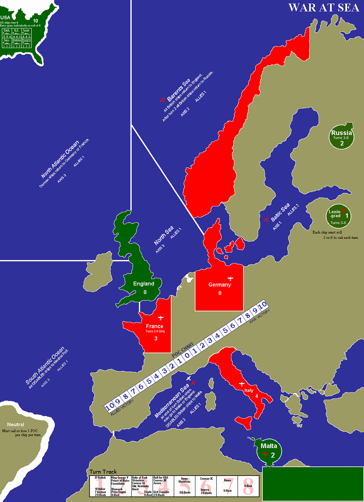

⚓ War at Sea
EN
ターン:
1
次フェイズ▶
ターン終了
POC:
0
ズーム:
−
＋
70%
駒表示
戦闘ログ
プレイ陣営:
枢軸
連合（準備中）
あなたはドイツ軍（枢軸）を担当します。連合軍はAIが動かします。
オプションルール
Uボート上限なし
ビスマルク級 防御7
米国投入ダイス緩和
ゲーム開始
戦闘ログ
閉じる
枢軸艦 帰還フェイズ
艦名
現在地
帰還先 / 洋上補給
帰還
枢軸艦 修理フェイズ
艦名
損害
修理量
決定
戦闘解決
―
連合軍
枢軸軍
AI戦闘実行
高速戦闘
連合軍の攻撃
攻撃
戦闘確認
ラウンド終了
閉じる
枢軸軍 AXIS
連合軍 ALLIES
◀

移動
戦闘
港湾
艦船一覧
全艦選択
移動先
実行
解除
連合軍AI
連合軍AI移動実行
100回高速シミュレート
修理 (13)
修理実行
海域リセット
1. Uボート戦闘 (ASW + 反撃)
3. 航空攻撃 (LBA + 空母)
連合 (空爆値3, 1回/ターン)
枢軸 (空爆値3, 1回/ターン)
4. 水上戦闘